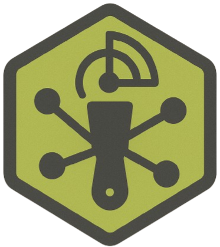

NATIVE STACK
Bash · Python · nmap · curl · GeoIP
The native repository may collect public-node data; the static browser page is analysis/planning only.

ZZX-LABS R&D // SOFTWARE
FullNode-Scraper is a Bash/Python toolset that scans and geolocates public Bitcoin nodes, producing 6-hour JSON snapshots with Tor/clearnet splits and network metadata.
BITCOIN // PUBLIC NODE SNAPSHOTS
| Country | Nodes | % |
|---|
NATIVE STACK
The native repository may collect public-node data; the static browser page is analysis/planning only.
VERSION
Linux · macOS · Kali